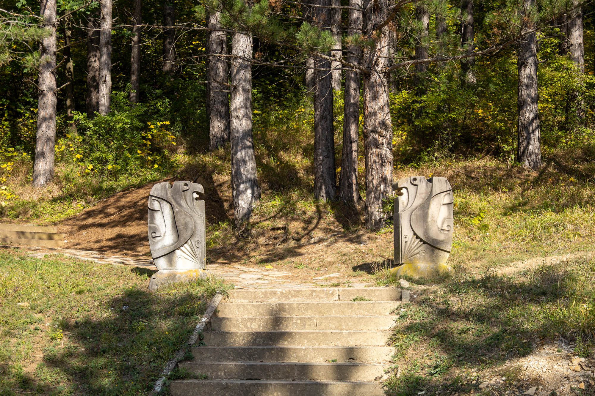
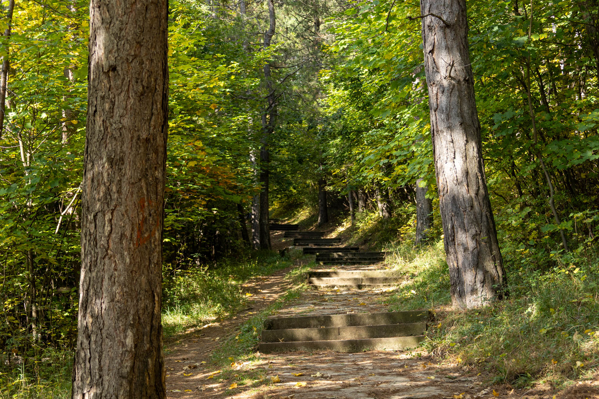
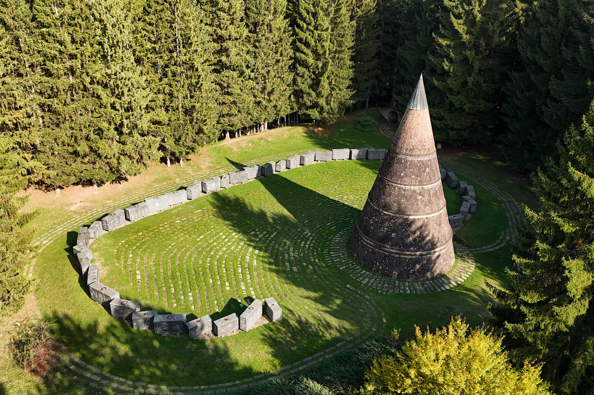
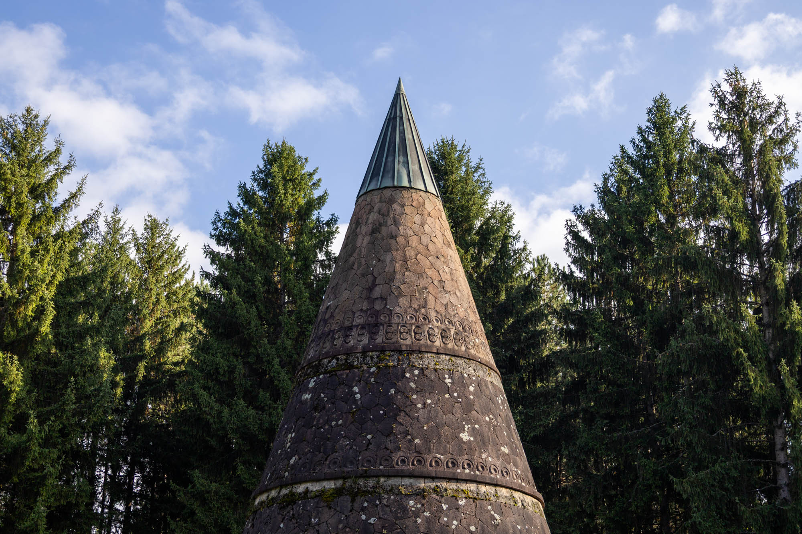
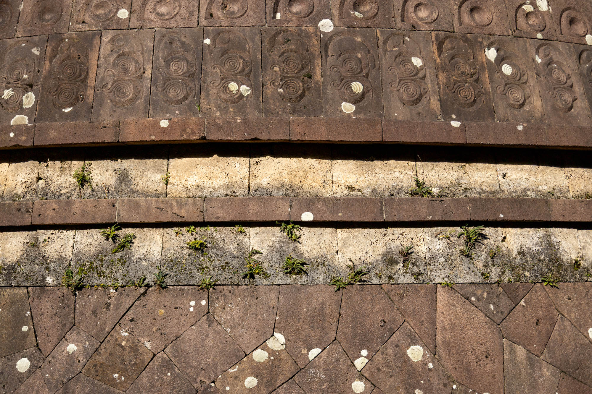
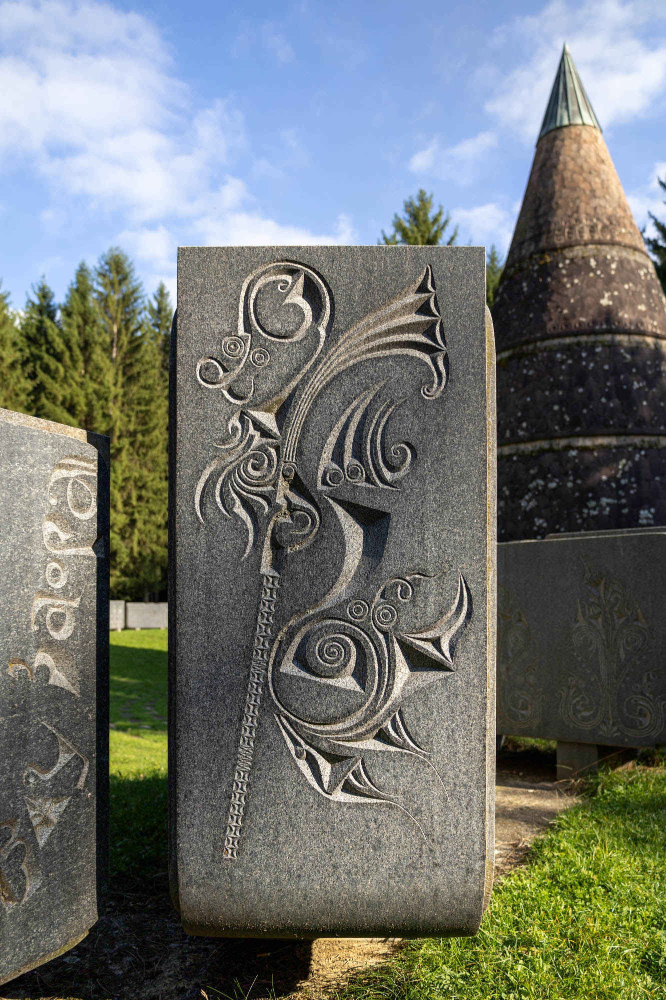
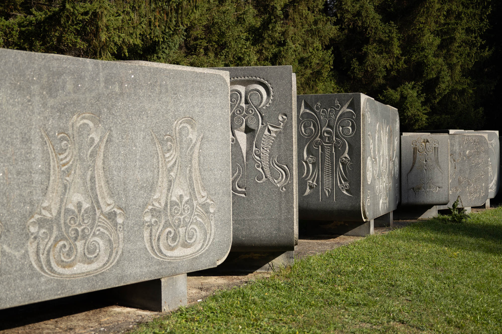
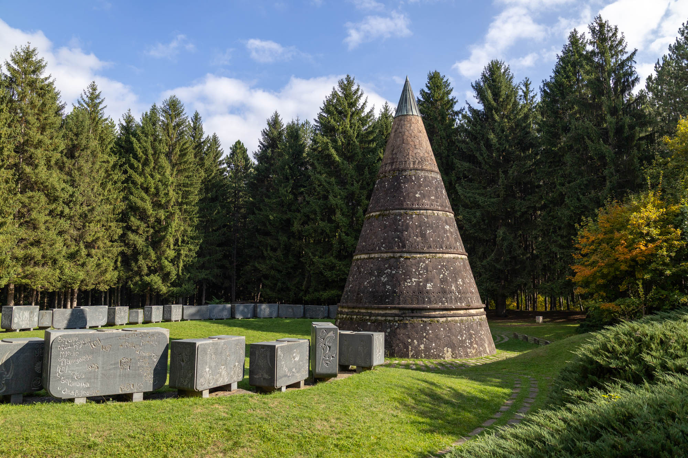

As you walk between the statues standing guard, follow the path that leads to the top of the hill. Nestled in the sunken grass where an ancient Turkish fortress once stood, you’ll discover a particularly unusual and intriguing Montenegrin spomenik.



Located on Jasikovac Hill in Berane, the “Monument to Freedom” spomenik, designed by Bogdan Bogdanović, features an 18-metre cone circled by a line of stone blocks. The inscriptions on the line of stones tell the story of the Vasojevići clan and their Partisan descendants, spanning from the 16th century through to the end of World War II.


The sandstone cone shape draws inspiration from traditional shepherd huts from this region of Montenegro. Its warm stone, with its minimal carvings and patchwork pattern, shares only the carving style with the cold grey blocks. Each of the 40 gabbro blocks, roughly consistent in rectangular shape, are covered on both sides with complex carvings that tell a continuous story.


The blocks tell the history of the Vasojevići clan, from their resistance to Ottoman rule during the 16th to 18th centuries, to their involvement in border uprisings across Montenegro and Serbia in the 1800s. Continuing in the early 20th century, they fought in the Balkan Wars and World War I, to later during World War II, then they aligned with the Partisans to fight the Italian and German invading Axis forces.
